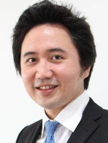
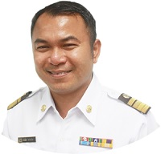

Title: Brain-Computer Interface (BCI) for Preventive, Treatment, Rehabilitation and Assistive Technologies
Currently, researches on offline analysis of brain-computer interface (BCI) become widely applicable to both the preventive, assistive technologies and machine control. However, investigation on real-time processing of BCI for many applications is still in progress. Electroencephalogram (EEG) signal has been used in medical field for analyzing the brain conditions and activities. It can also be used to diagnose several brain diseases. Brain signals can be acquired either by invasive type (by implanting electrodes into the skull) or non-invasive type (by attaching probes on the skull surface, EEG). The invasive type is superior in term of signal strength while the non-invasive type does not require any surgeries. In this talk, the recent researches in BCI and their applications will be illustrated together with the analysis of the secret behind each method.
Present By

Asst. Prof. Yodchanan Wongsawat, Ph.D.
Department of Biomedical Engineering, Faculty of Engineering
Mahidol University, Thailand
Dr. Yodchanan Wongsawat received the B.Eng. degree from Sirindhorn International Institute of Technology (SIIT), Thammasat University, Thailand, in 2001, the M.S. and Ph.D. degrees from the University of Texas at Arlington, USA, in 2003 and 2007. In May 2008, he joined the Department of Biomedical Engineering, Faculty of Engineering, Mahidol University, Thailand, where he is currently a vice dean for research and international relations, and the director of Brain- Computer Interface Laboratory. With his contribution in brain-computer interface technology, he has received the 2013 Mahidol University distinguished academic career award. In 2014, he has received the Mahidol University Award on Innovation. Recently, in 2016, he has received the Inventor Award from the National Research Council of Thailand. His current research interests include brain-computer interface (BCI), intra-operative monitoring, transcranial magnetic stimulation, and medical instrumentations.
-------------------------------------------------------------------------------------------------------------------------------------------------------------------------------

Sakda Panwai, Ph.D., P.E.
Director of Expressway Engineering System Research and Development Division
Expressway Authority of Thailand
Dr.Sakda Panwai received B.Sc. Ind. Ed. (Civil Engineering) (First Class Honours) in 1996 from King Mongkut Institute of Technology Thonburi, Thailand, M. Eng (Transportation) in 1998 from Asian Institute of Technology, Thailand, and Ph.D. (Intelligent Transport System) in 2007 from the University of Queensland, Australia. He also obtained his M.B.A. (Marketing) degree in 2015 from Ramkhamhaeng University, Thailand. He has been working in the Expressway Authority of Thailand since 1998. At present, he is the Director of Expressway System Engineering Research and Development Division.
Dr.Panwai has 15 years of experience in Intelligent Transport System (ITS). His specific interest lies in the areas of Traffic Engineer (Modelling and Application), Transport Engineer, Intelligent Transport System (ITS) Applications, Artificial Intelligence (AI), Transport Emission Modelling, Intelligent Agent Technology, Microscopic Traffic Simulation, Evaluation of new application and system, Traffic Safety Modelling and Applications, and Business Administration and Marketing Research.